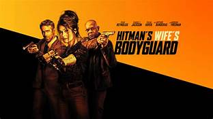

HITMAN'S WIFE BODYGUARD
Hitman's Wife's Bodyguard (released as The Hitman's Wife's Bodyguard in Australasia) is a 2021 American action comedy film directed by Patrick Hughes and written by Tom O'Connor and Brandon and Phillip Murphy. The film is a sequel to the 2017 film The Hitman's Bodyguard and features Ryan Reynolds, Samuel L. Jackson, Salma Hayek, and Richard E. Grant reprising their roles, with Frank Grillo, Tom Hopper, Antonio Banderas, and Morgan Freeman joining the cast. In the film, suspended bodyguard Michael Bryce (Reynolds) must once again team up with hitman Darius Kincaid (Jackson) and his wife (Hayek) to stop a madman (Banderas) from launching a terror attack on Europe.
STAR CAST
Ryan Reynolds
Samuel L Jackson
Salma Hayek
Age Restriction
16LV (language & violence)